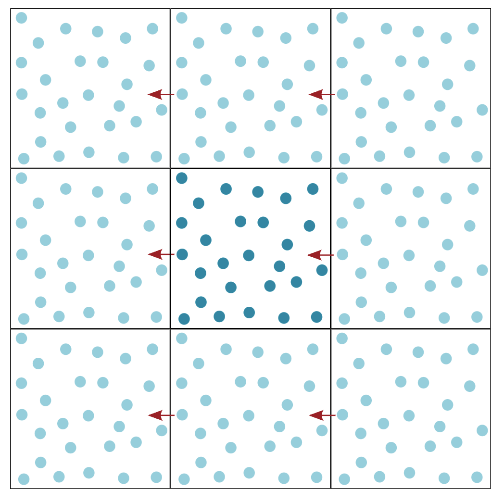
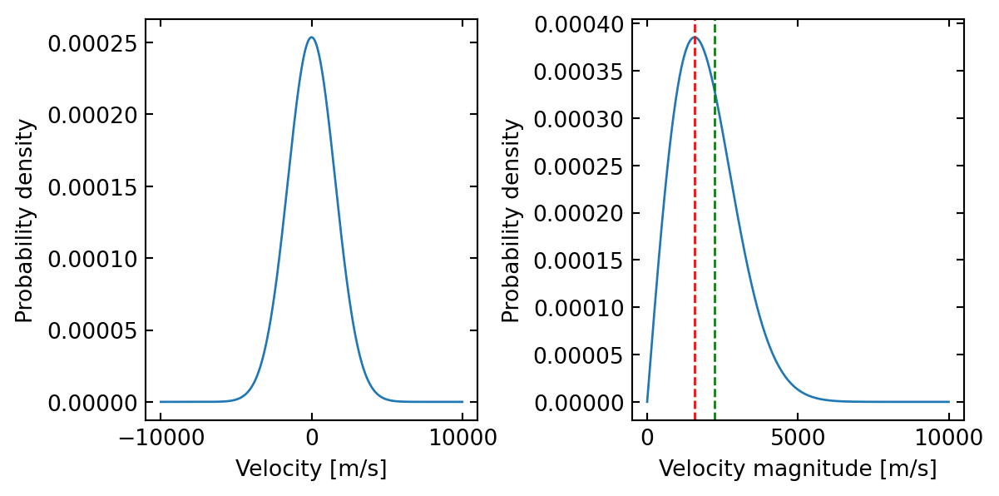

Step-by-Step Development of a Molecular Dynamics Simulation
Author
Frank Cichos
From Theory to Code
In the previous document, we learned about the key components of a molecular dynamics simulation: - The Lennard-Jones potential describing forces between atoms - The Velocity Verlet algorithm for updating positions and velocities
Now we’ll implement these concepts in code. To organize our simulation, we’ll have to think about some issues:
What to do at the boundary: Boundary Conditions
In the previous example, we have assumed that the particle is in free fall. That means eventually it would bounce against the floor. In a real simulation, we need to consider boundary conditions as well. For example, if the particle hits the ground we could implement a simple reflection rule. This is called reflecting boundary conditions and would introduce some additional effects to the simulation. On the other side, one could make the system “kind of” infinitely large by introducing periodic boundary conditions. This means that if a particle leaves the simulation box on one side, it re-enters on the opposite side. This is a common approach in molecular dynamics simulations.

Perdiodic Boundary Conditions
The Minimum Image Convention in Molecular Dynamics
When we simulate particles in a box with periodic boundary conditions (meaning particles that leave on one side reappear on the opposite side), we need to calculate the forces between them correctly. Imagine two particles near opposite edges of the box: one at position x=1 and another at x=9 in a box of length 10. Without the minimum image convention, we would calculate their distance as 8 units (9-1). However, due to the periodic boundaries, these particles could actually interact across the boundary, with a shorter distance of just 2 units! The minimum image convention automatically finds this shortest distance, ensuring that we calculate the forces between particles correctly. It’s like taking a shortcut across the periodic boundary instead of walking the longer path through the box.
How to represent atoms
The question we have to think about now is how to implement these formulas in a numerical simulation. The goal is to simulate the motion of many atoms in a box. Each atom is different and has its own position, velocity, and force. Consequently we need to store these quantities for each atom, though the structure in which we store them is the same for each atom. All atoms with their properties actually belong to the same class of objects. We can therefore use a very suitable concept of object-oriented programming, the class.
A class in object-oriented programming is a blueprint for creating objects (a particular data structure), providing initial values for state (member variables or attributes), and implementations of behavior (member functions or methods). The class is a template for objects, and an object is an instance of a class. The class defines the properties and behavior common to all objects of the class. The objects are the instances of the class that contain the actual data.
Think of the Atom class as a container for everything we need to know about a single atom:
Its position (where is it?)
Its velocity (how fast is it moving?)
The forces acting on it (what’s pushing or pulling it?)
Its type (is it hydrogen, oxygen, etc.?)
Its mass (how heavy is it?)
How to represent forces
We also have a set of forces, that is acting between the atoms. These forces are calculated based on the positions of the atoms. The force fields are all the same for the atoms only the parameters are different. We can represent the force field as a class as well. We will first implement the Lennard-Jones potential in the class. Later we will implement more complex force fields. We will realize that we will later have to introduce different parameters for the Lenard Jones potential for different atom types. We will store these parameters in a dictionary. This dictionary will be part of the force field class and actually represent the Force Field.
If atoms are of the same type, they will have the same parameters. However, if they are of different types we will have to mix the parameters. This is done by the mixing rules. We will implement the Lorentz-Berthelot mixing rules. These rules are used to calculate the parameters for the interaction between two different atom types.
Lorentz-Berthelot Mixing Rules
For two different atoms (A and B), the Lennard-Jones parameters \(\sigma\) and \(\epsilon\) are calculated using:
Arithmetic mean for \(\sigma\) (Lorentz rule):
\[\sigma_{AB} = \frac{\sigma_A + \sigma_B}{2}\]
Geometric mean for \(\epsilon\) (Berthelot rule):
\[\epsilon_{AB} = \sqrt{\epsilon_A \epsilon_B}\]
These parameters are then used in the Lennard-Jones potential:
In the previous example, we have started with a particle at rest. In a real simulation, we would like to start with a certain temperature. This means that the particles have a certain velocity distribution. We can introduce this by assigning random velocities to the particles. The velocities should be drawn from a Maxwell-Boltzmann distribution. This is a distribution that describes the velocity distribution of particles in at a certain temperature. The distribution is given by:
where \(m\) is the mass of the particle, \(k_B\) is Boltzmann’s constant, and \(T\) is the temperature. \(v_x\) is the velocity in the x-direction. The velocities in the y and z directions are drawn in the same way. The temperature of the system is related to the kinetic energy of the particles.
Maxwell-Boltzmann Velocities in 3D
The probability distribution for the velocity magnitude in 3D is:
# Constantskb =1.380649e-23# Boltzmann constant in J/Km_H =1.6735575e-27# Mass of hydrogen atom in kgT =300# Temperature in K# Velocity range for plottingv = np.linspace(-10000, 10000, 1000) # m/sv_mag = np.linspace(0, 10000, 1000) # m/s# Maxwell-Boltzmann distribution for x-componentdef MB_1D(v, m, T):return np.sqrt(m/(2*np.pi*kb*T)) * np.exp(-m*v**2/(2*kb*T))# Maxwell-Boltzmann distribution for velocity magnitude in 2Ddef MB_2D_mag(v, m, T):return v * m/(kb*T) * np.exp(-m*v**2/(2*kb*T))# Create figurefig, (ax1, ax2) = plt.subplots(1, 2, figsize=get_size(16, 8))# Plot x-component distributionax1.plot(v, MB_1D(v, m_H, T))ax1.set_xlabel('Velocity [m/s]')ax1.set_ylabel('Probability density')# Plot magnitude distributionax2.plot(v_mag, MB_2D_mag(v_mag, m_H, T))ax2.set_xlabel('Velocity magnitude [m/s]')ax2.set_ylabel('Probability density')ax2.axvline(np.sqrt(kb*T/m_H), color='r', linestyle='--', label='Most probable velocity')ax2.axvline(np.sqrt(2)*np.sqrt(kb*T/m_H), color='g', linestyle='--', label='Mean velocity')plt.tight_layout()plt.show()# Print most probable velocityv_mp_1D =0# Most probable velocity for 1D is zerov_mp_2D = np.sqrt(kb*T/m_H) # Most probable velocity magnitude in 2Dprint(f"Most probable velocity magnitude in 2D: {v_mp_2D:.1f} m/s")print(f"Mean velocity magnitude in 2D: {np.sqrt(2)*v_mp_2D:.1f} m/s")

Most probable velocity magnitude in 2D: 1573.2 m/s
Mean velocity magnitude in 2D: 2224.8 m/s
The temperature T in a 2D system is related to the kinetic energy by:
\[T = \frac{2K}{N_f k_B}\]
where:
K is the total kinetic energy: \(K = \sum_i \frac{1}{2}m_i v_i^2\)
\(N_f\) is the number of degrees of freedom (2N in 2D, where N is number of particles)
\(k_B\) is Boltzmann’s constant (often set to 1 in reduced units)
To scale to a target temperature \(T_{target}\), we multiply velocities by \(\sqrt{\frac{T_{target}}{T_{current}}}\)
Who is controlling our simulation: Controller Class
Finally, we need a class that controls the simulation. This class will contain the main loop of the simulation, where the integration algorithm is called in each time step. It will also contain the methods to calculate the forces between the atoms.
How do we visualize our simulation
Before we implement all classes, we will first visualize the particles moving in a 2D box. We will use the matplotlib library to create an animation of the particles moving in the box. We will also implement periodic boundary conditions, so that particles that leave the box on one side re-enter on the opposite side.
import numpy as npimport matplotlib.pyplot as pltfrom IPython.display import clear_outputfrom scipy.spatial.distance import cdistn_side =21x = np.linspace(0.05, 0.95, n_side)y = np.linspace(0.05, 0.95, n_side)2xx, yy = np.meshgrid(x, y)3particles = np.vstack([xx.ravel(), yy.ravel()]).Tvelocities = np.random.normal(scale=0.005, size=(n_side**2, 2))radius =0.0177fig, ax = plt.subplots(figsize=(9,9))n_steps =2004for _ inrange(n_steps):5 clear_output(wait=True)# Update particle positions based on their velocities particles += velocities# Apply periodic boundary conditions in x direction (wrap around at 0 and 1) particles[:, 0] = particles[:, 0] %1# Apply periodic boundary conditions in y direction (wrap around at 0 and 1) particles[:, 1] = particles[:, 1] %1# Calculate distances between all pairs of particles distances = cdist(particles, particles)# Calculate collisions using the upper triangle of the distance matrix# distances < 2*radius gives a boolean matrix where True means collision# np.triu takes only the upper triangle to avoid counting collisions twice collisions = np.triu(distances <2*radius, 1)# Handle collisions between particlesfor i, j inzip(*np.nonzero(collisions)):# Exchange velocities between colliding particles (elastic collision)6 velocities[i], velocities[j] = velocities[j], velocities[i].copy()# Calculate how much particles overlap overlap =2*radius - distances[i, j]# Calculate unit vector pointing from j to i direction = particles[i] - particles[j] direction /= np.linalg.norm(direction)# Move particles apart to prevent overlap particles[i] +=0.5* overlap * direction particles[j] -=0.5* overlap * direction ax.scatter(particles[:, 0], particles[:, 1], s=100, edgecolors='r', facecolors='none') ax.set_xlim(0, 1) ax.set_ylim(0, 1) ax.axis("off") display(fig) plt.pause(0.01)# Clear the current plot to prepare for next frame ax.clear()
1
Create a 1D array of x and y-coordinates for the particles.
2
Create a meshgrid of x and y-coordinates.
3
Flatten the meshgrid to get a 2D array of particle positions.
4
Simulation loop
5
Clear the output to display the animation in a single cell.
6
Handle collisions between particles by exchanging velocities and moving particles apart to prevent overlap. The exchange of velocities in your code works because of the conservation of momentum and energy:
For two particles of equal mass m in a head-on elastic collision: Before collision: